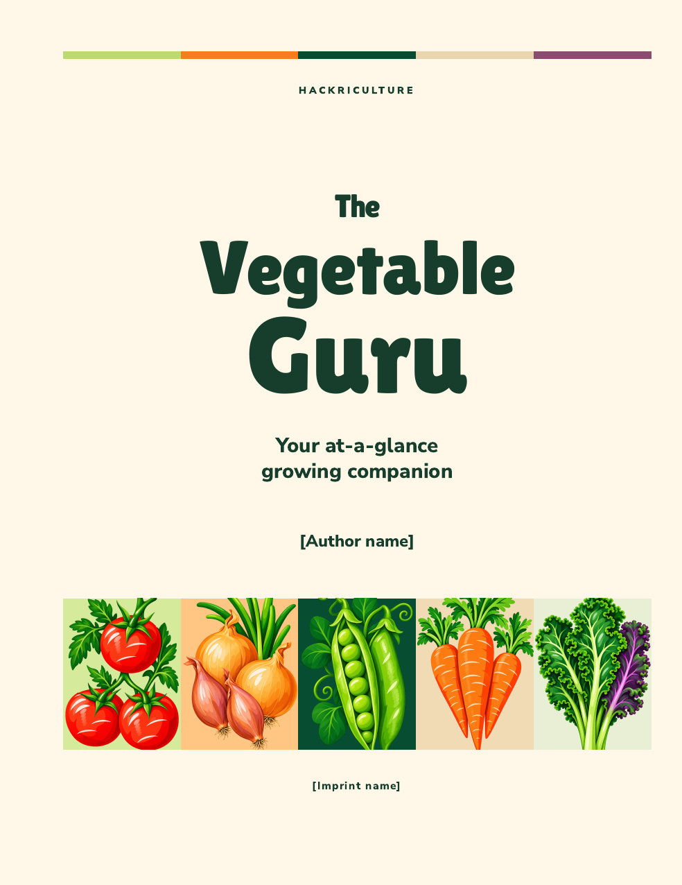
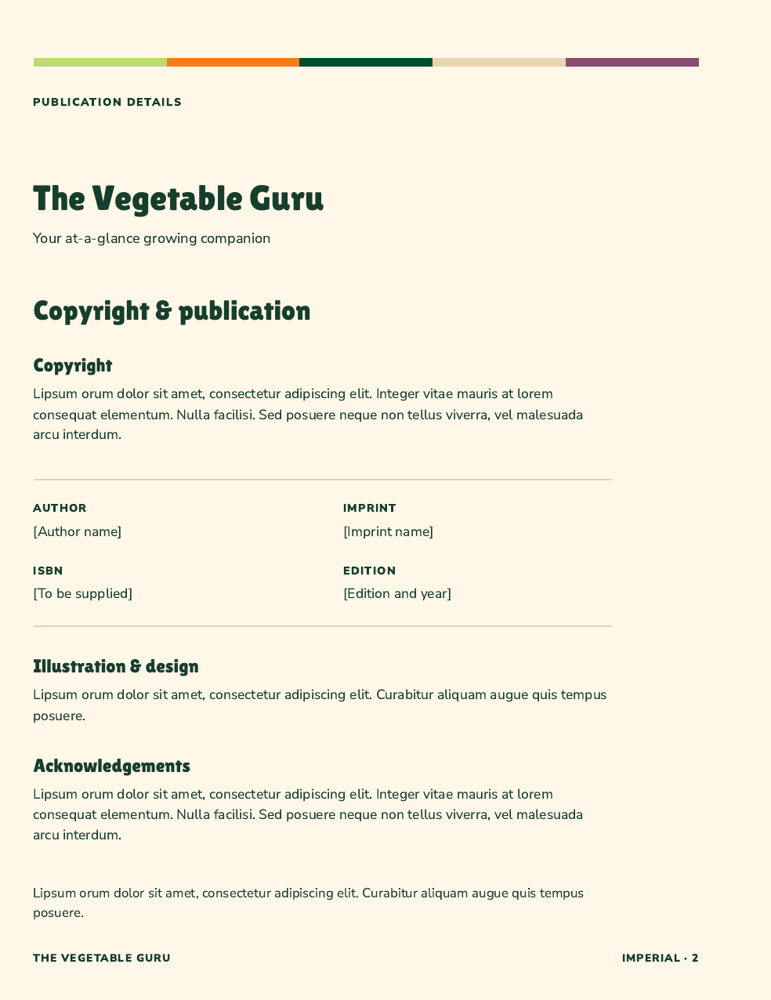
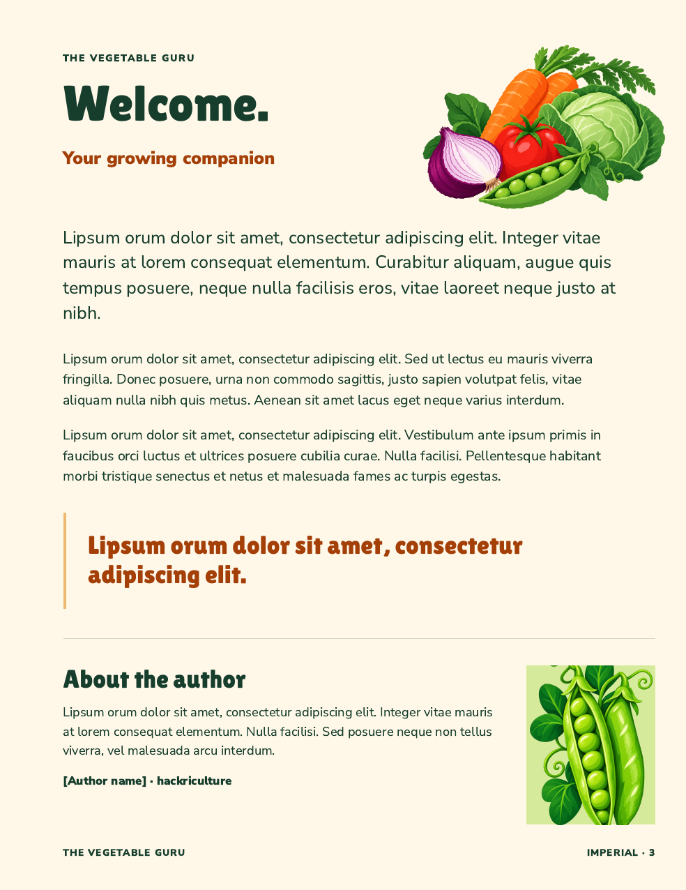

The first three pages
Title, publication details and welcome, designed to sit before the approved contents and how-to. All prose blocks use lipsum orum; author, imprint, ISBN and edition remain placeholders.
185 × 240 mm paperback · Bookvault · 7 October 2026 · Separate design proofs for review
1 · Title

2 · Publication details

3 · Welcome

The facing spread
Publication details on the left; the welcome on the right. Click any page for a larger view.


The title page counts as page 1 but has no printed folio. Metric uses the same layout, with its edition name in the footers. These three pages keep the existing seven-page opening allowance and guide references.
Design references


G2 supplies the title hierarchy, cream/green palette and tile idea. The approved hero files and harvest cluster supply the artwork. No new illustrations were generated.
Checks and source notes
Both PDFs contain three pages with the expected trim, bleed, placeholders and safe text margins. All six rendered pages have been visually inspected. The approved contents/how-to files are unchanged and still match their approval hashes. Full-book files have not been reassembled.
Build and source receipt · PDF checks · Layout notes · Book review pack